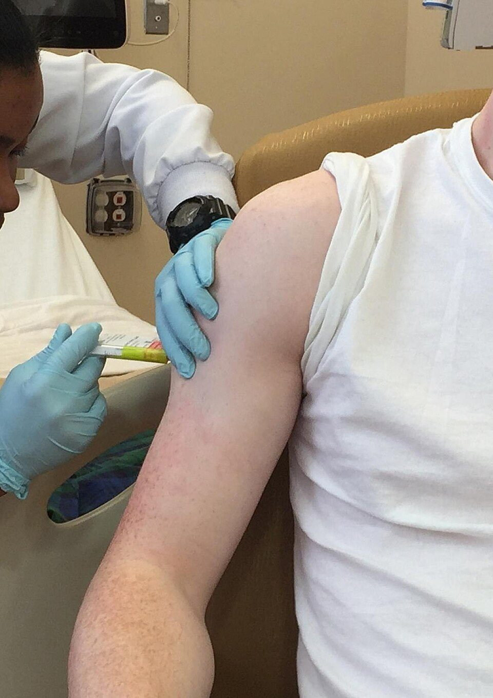

General information only. It does not replace advice from your care team and should not be used to choose a treatment.

.jpg){kind=link}
What it is
A clinical trial is a study in people that tests whether a new treatment (or a new way of using a known one) is safe and effective, usually by comparing it with standard treatment. Every cancer drug used today went through clinical trials first, with thousands of patients taking part.
The phases
| Phase | Main question | Participants |
|---|---|---|
| I | Is it safe? What dose? | Tens, often with different tumours |
| II | Does it work against this cancer? | Tens or hundreds |
| III | Is it better than standard treatment? | Hundreds or thousands, randomly assigned |
| IV | What happens in real practice, long term? | Patients treated after approval |
Randomised phase III trials are the ones that usually change clinical practice. Phase I or II results are promising but preliminary.
Common myths
- "I'll get a placebo instead of treatment": in oncology a patient is almost never left untreated. If there is a placebo, it is usually added to standard treatment.
- "I'm a guinea pig": trials are regulated, approved by an ethics committee and the medicines agency, and patients can leave at any time.
- "They're only for people with no other option": there are trials at every stage of disease, even after surgery.
What to ask
- What is the aim of the trial? What is it compared with?
- What treatment would I get if I don't take part?
- What extra tests and visits are involved? Who covers the costs?
- What side effects are known?
- What happens when the trial ends?
How to find one
Ask your oncologist: they are best placed to know if you meet the criteria. You can also search ClinicalTrials.gov, the EU's CTIS register, the WHO's ICTRP portal, or national services such as Be Part of Research in the UK. Be wary of clinics that charge to take part in a supposed trial.
See also: How to read cancer news, Bernard Fisher.
Sources
- ClinicalTrials.gov. clinicaltrials.gov
- EU Clinical Trials (CTIS). euclinicaltrials.eu
- NCI. Clinical trials information for patients and caregivers. cancer.gov